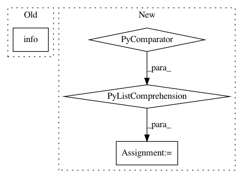

b61667d3daac5610cf40a7346efddb34476c059b,scripts/bert/finetune_squad.py,,train,#,285
Before Change
step_loss = 0.0
log_num = 0
if args.debug:
log.info("Exit early in test mode")
break
epoch_toc = time.time()
log.info("Time cost={:.2f} s, Thoughput={:.2f} samples/s".format(
epoch_toc - epoch_tic, total_num/(epoch_toc - epoch_tic)))
After Change
else:
train_data = SQuAD(segment, version="1.1")
if args.debug:
sampled_data = [train_data[i] for i in range(1000)]
train_data = mx.gluon.data.SimpleDataset(sampled_data)
log.info("Number of records in Train data:{}".format(len(train_data)))
train_data_transform, _ = preprocess_dataset(
train_data, SQuADTransform(
In pattern: SUPERPATTERN
Frequency: 3
Non-data size: 4
Instances
Project Name: dmlc/gluon-nlp
Commit Name: b61667d3daac5610cf40a7346efddb34476c059b
Time: 2019-06-18
Author: linhaibin.eric@gmail.com
File Name: scripts/bert/finetune_squad.py
Class Name:
Method Name: train
Project Name: NifTK/NiftyNet
Commit Name: 696c0bba5172aa702b46e36119cbf73776fcfeee
Time: 2018-11-22
Author: wenqi.li@ucl.ac.uk
File Name: niftynet/engine/handler_model.py
Class Name: ModelRestorer
Method Name: restore_model
Project Name: ray-project/ray
Commit Name: cb919c5e5c151f87616850c056402beefd5f7ff6
Time: 2020-09-04
Author: rkooo567@gmail.com
File Name: streaming/python/runtime/transfer.py
Class Name: DataReader
Method Name: __init__